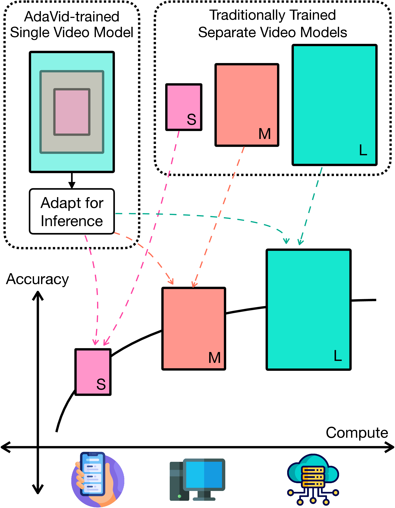
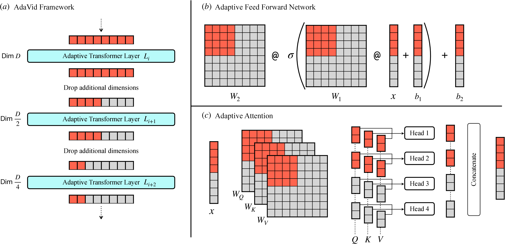
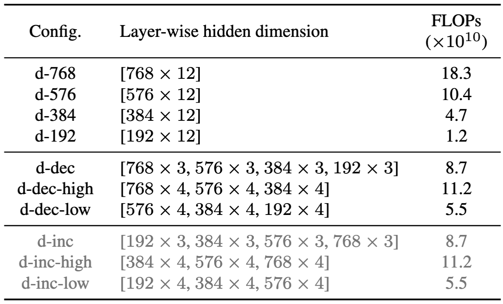
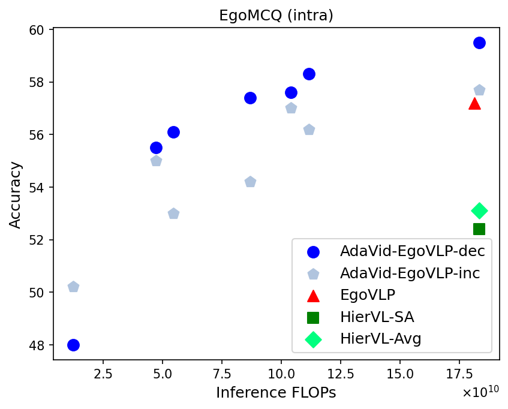
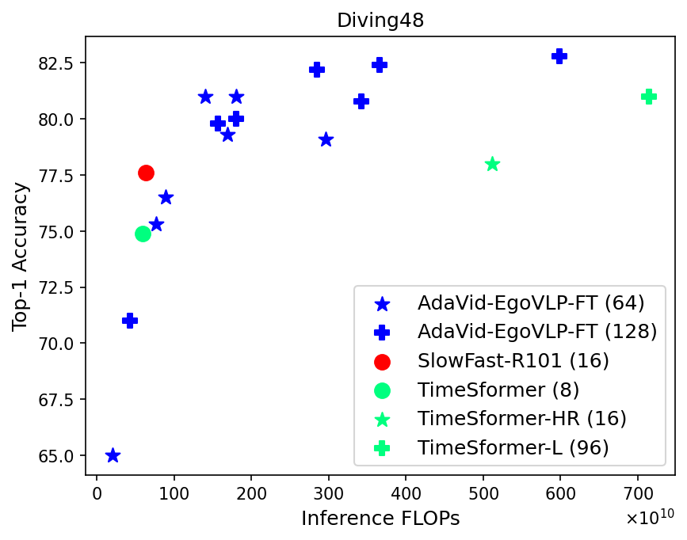
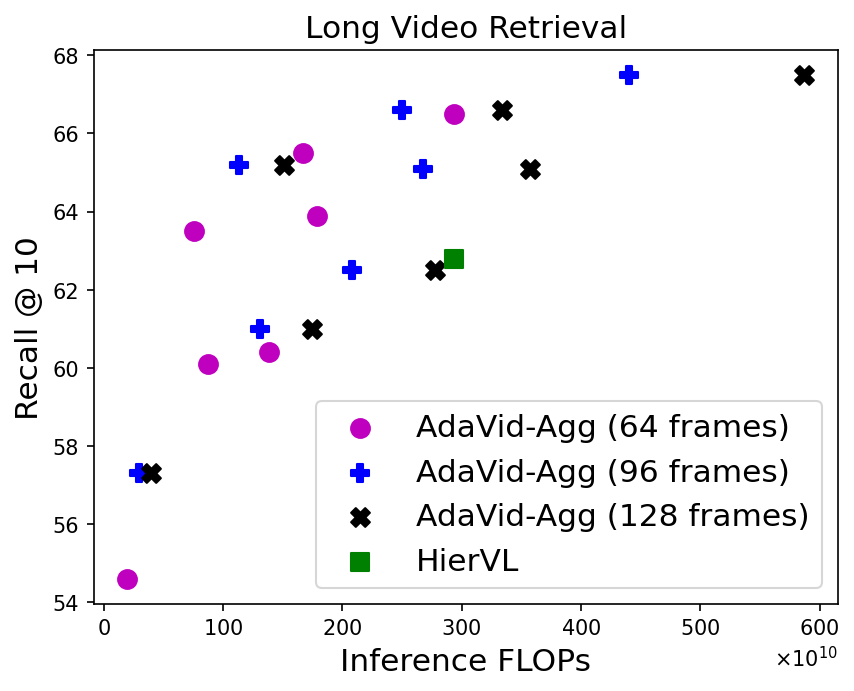
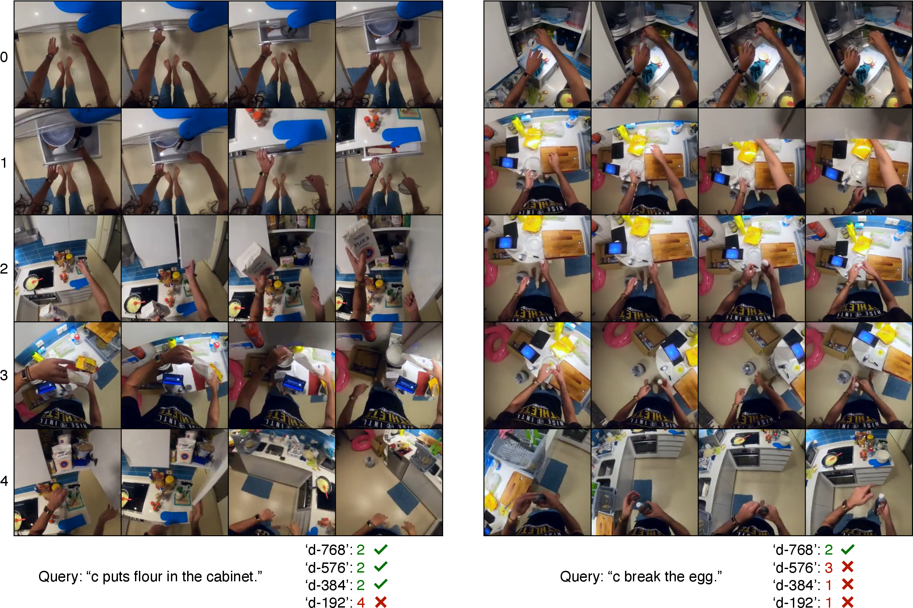
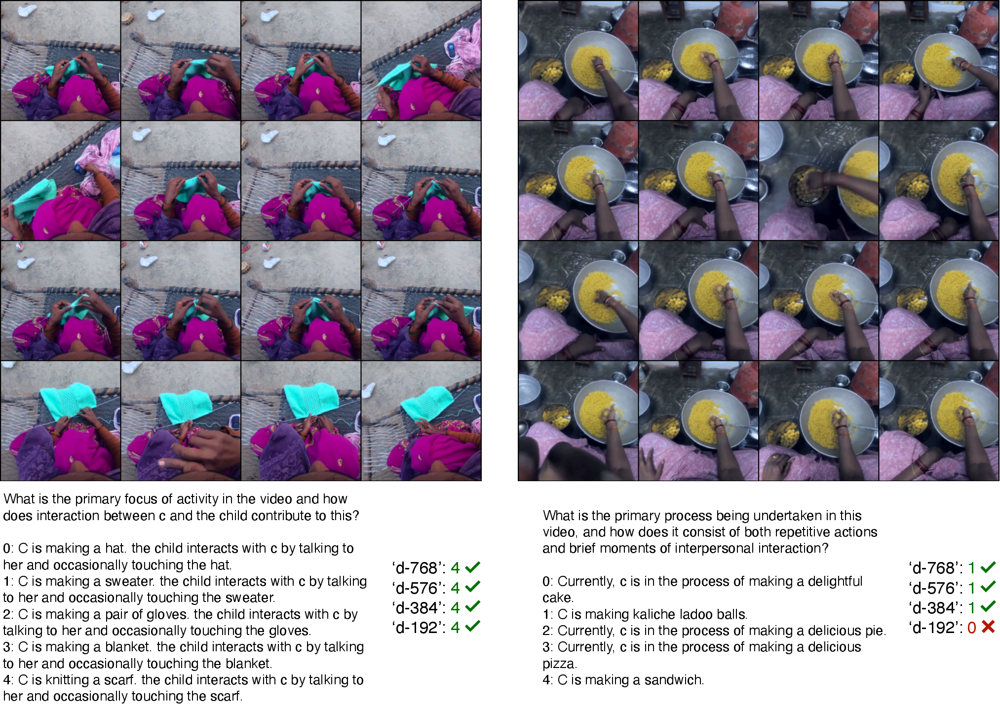

A single AdaVid-trained video model facilitates inference with controllable computational footprint without any postprocessing. It allows one model to adjust its computational demands dynamically according to the requirements, thereby eliminating the need to train multiple distinct models.
Abstract
Contrastive video-language pretraining has demonstrated great success in learning rich and robust video representations. However, deploying such video encoders on compute-constrained edge devices remains challenging due to their high computational demands. Additionally, existing models are typically trained to process only short video clips, often limited to 4 to 64 frames. In this paper, we introduce AdaVid, a flexible architectural framework designed to learn efficient video encoders that can dynamically adapt their computational footprint based on available resources. At the heart of AdaVid is an adaptive transformer block, inspired by Matryoshka Representation Learning, which allows the model to adjust its hidden embedding dimension at inference time. We show that AdaVid-EgoVLP, trained on video-narration pairs from the large-scale Ego4D dataset, matches the performance of the standard EgoVLP on short video-language benchmarks using only half the compute, and even outperforms EgoVLP when given equal computational resources. We further explore the trade-off between frame count and compute on the challenging Diving48 classification benchmark, showing that AdaVid enables the use of more frames without exceeding computational limits. To handle longer videos, we also propose a lightweight hierarchical network that aggregates short clip features, achieving a strong balance between compute efficiency and accuracy across several long video benchmarks.
Adaptive Transformer Block

AdaVid Framework is designed to train video encoders that facilitate adaptive compute-efficient inference.
(a) Key component of AdaVid is the Adaptive Transformer Layer, which is designed to handle input tokens of varying dimension sizes up to D. During each training iteration, each layer processes the input tokens with a randomly selected dimension size, enforcing a coarse-to-fine structure in the model's weights and activations. This allows an AdaVid-trained model to perform inference with a controllable compute footprint.
(b) The feedforward layer W2 σ(W1 x + b1) + b2 of the transformer can be modified to accommodate input tokens of size D/2 by appropriately slicing the weight and bias parameters. This approach is also applicable to the affine transformation of layer normalization.
(c) In multi-head attention, input tokens of size D/2 are processed using half the number of heads, rather than reducing the dimension of each head.
Inference Configurations

We evaluate a single trained AdaVid model with different configurations for embedding dimensions. [768 x 12] indicates that all 12 layers use 768-d tokens. [768 x 4, 576 x 4, 384 x 4] means that first four layers use 768-d, followed by four layers of 576-d, followed by final four layers of 384-d. The FLOPs are computed for T=4 frames.
Results

AdaVid-EgoVLP-dec outperforms baselines on the EgoMCQ-intra benchmark and retains high accuracy even when using adaptively smaller embedding dimensions and reduced compute.

AdaVid uses adaptive dimensions to handle more frames (64-128) within a fixed compute budget, outperforming standard non-adaptive baselines on Diving-48 benchmark.

AdaVid-Agg outperforms HierVL on long video retrieval across multiple frame counts (64, 96, 128) and with less compute.

We show two challenging examples from the EgoMCQ(intra) benchmark, each consisting of a text query and five candidate video clips. We also show the predictions made by our AdaVid-EgoVLP model under four different evaluation configurations. The results indicate that the model can do accurate fine-grained video analysis by adaptively increasing its compute. Here is another example.

We show two examples from the EgoSchema VideoQA benchmark, each consisting of a video and a question with 5 candidate answers. We also show the predictions made by our AdaVid-Agg model under four different evaluation configurations. The results indicate that the model can do long-form video analysis efficiently by adaptively increasing its compute. Here is another example.
BibTex
@InProceedings{Patel2025AdaVid,
author = {Patel, Chaitanya and Niebles, Juan Carlos and Adeli, Ehsan},
title = {AdaVid: Adaptive Video-Language Pretraining},
booktitle = {Proceedings of the IEEE/CVF Conference on Computer Vision and Pattern Recognition (CVPR) Workshops},
month = {June},
year = {2025}
}